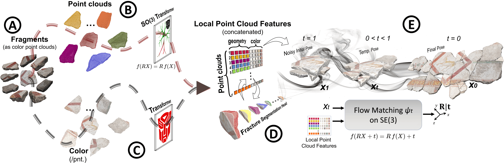
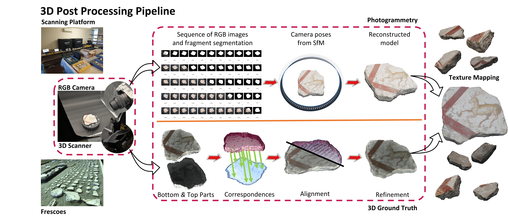

About Me
I am a final year PhD Researcher at the Istituto Italiano di Tecnologia (IIT) in Genoa, Italy, supervised by Dr. Alessio Del Bue and Prof. Dr. Vittorio Murino. I was also a Visiting Doctoral Researcher at the Max-Planck-Institut für Informatik in Germany, working with Dr. Vladislav Golyanik and Prof. Christian Theobalt.
My research broadly lies at the intersection of Computer Vision, Deep Learning, and Multimodal Visual and Spatial Reasoning.
Previously, I was a Researcher and Lecturer at the University of the Punjab, where I worked on NLP, document analysis, and medical imaging, and earned my BS and MS in Computer Science as a Silver Medalist.
News
- Jun 2026 🎉 One paper accepted at ECCV 2026.
- Dec 2025 🎉 Started as a Visiting Doctoral Researcher at the Max-Planck-Institut für Informatik, Germany.
- Nov 2025 Attended the RePAIR Project meeting in Pompeii, Italy.
- Sep 2025 Attended the Mediterranean Machine Learning Summer School in Split, Croatia.
- Sep 2025 Attended ICIAP 2025 in Rome, Italy.
- Aug 2025 Attended the Oxford Machine Learning School in Oxford, UK.
- Jun 2025 🎉 One paper accepted at ICCV 2025.
- Apr 2025 Attended the RePAIR Project meeting in Pompeii, Italy.
- Sep 2024 🎉 One paper accepted at NeurIPS 2024.
- Sep 2024 Attended ECCV 2024 in Milan, Italy.
- Jul 2024 Attended the Vision and Sports Summer School in Prague, Czech Republic.
- Nov 2023 🎉 Began my PhD research journey at Istituto Italiano di Tecnologia (IIT), Italy.
Selected Publications


